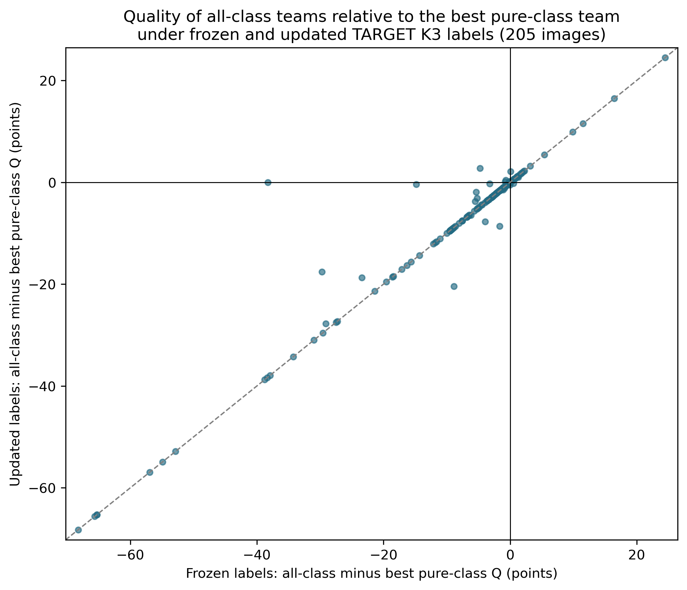

Primary Manual targets; 205 common scoreable images. Negative values favor the best scoreable pure-class team (at least three members). This is a retrospective comparison, not a deployable selection policy. Class capacity and pure-team membership can change; all-class membership does not. Unknown-background variants and other targets are reported separately. No uncertainty interval is implied.
Source rows | PDF | SVG